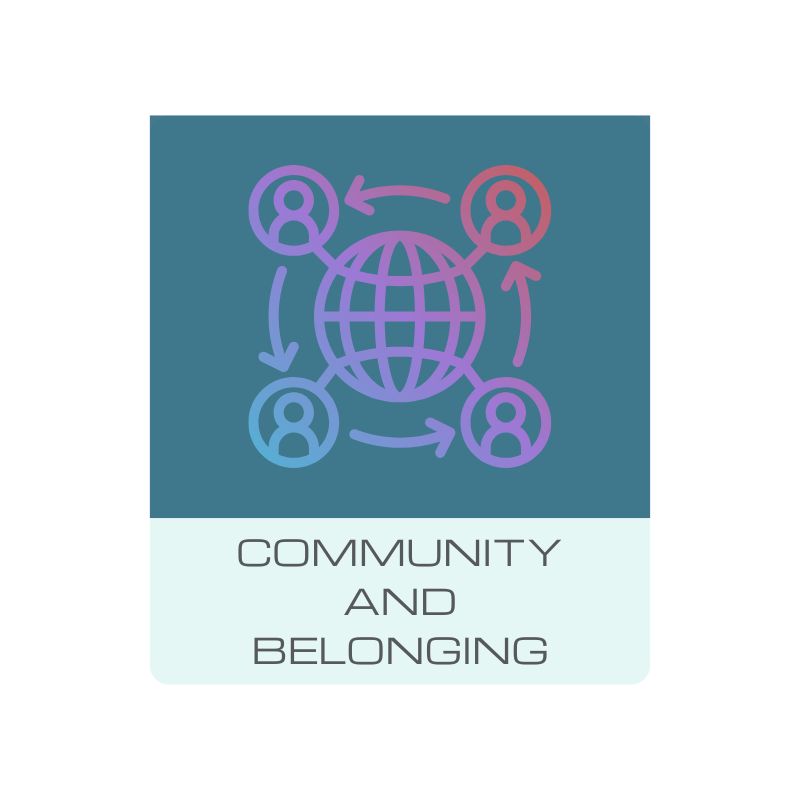
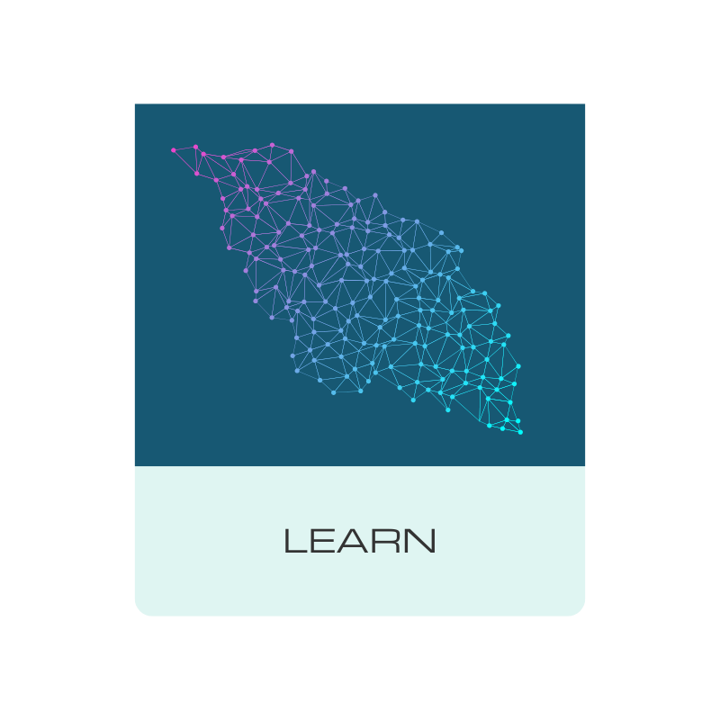
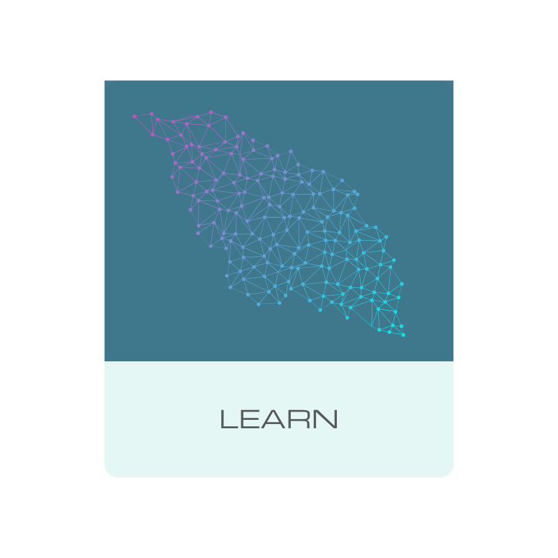
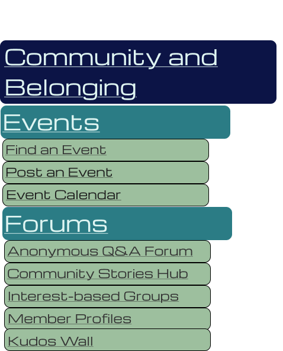
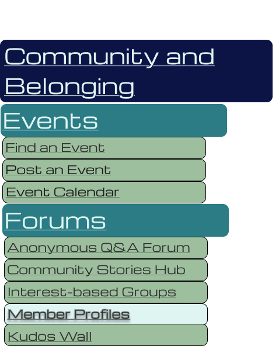

Behavioural Design
The focus of this section of the Style Guide is on
Behavioural Design, which addresses the user's interactions
and experiences with a product or interface. It ensures that
the design is intuitive, efficient, and enjoyable to use,
ultimately leading to a positive overall experience.
Click on each of the buttons to learn more about their
design and functionality.
Cards
Cards support smooth navigation and align with the colour palette and typography established in the Visceral Design section.
| Initial State | Hover/Clicked State |
|---|---|
|  | |
|  |  |
Links
Links are designed to support smooth navigation in line with the colour palette and typography established in the Visceral Design section.
| Initial State | Hover/Clicked State |
|---|---|
|  |  |
|
Initial links use secondary colours and accents to maintain a cohesive design system. Typography is clear and legible (Michroma font). |
On hover/click, links invert to background colour and text gains drop shadow. This provides feedback and signals interactivity. |